声明：本文仅作爱好研究使用，本人不对任何任何设备或软件使用后果负责
入门
卡片的基本知识
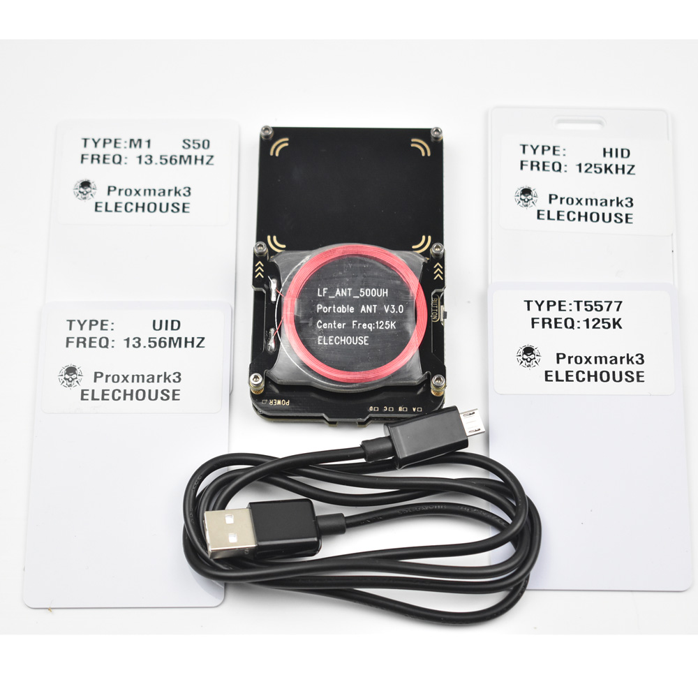卡的类型跟外观没有绝对关系的，下面两张卡都是IC卡(协议标准：ISO 14443A)
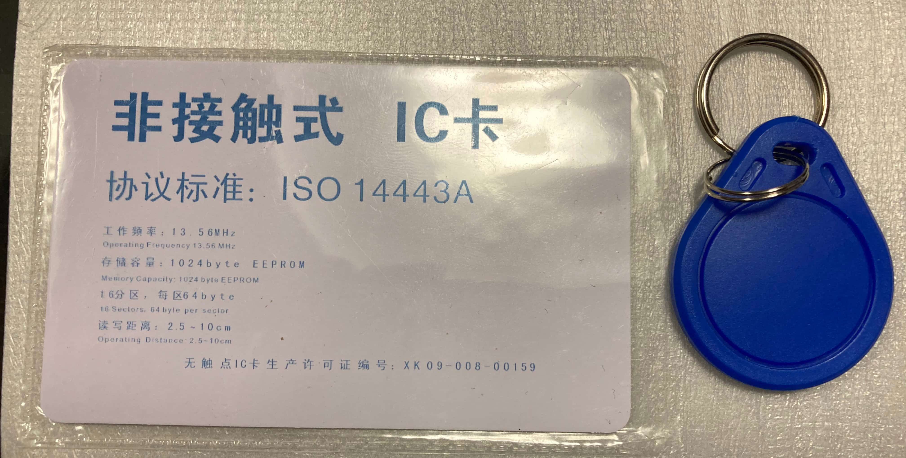目前我将卡的类型简单分为 IC(高频) 和 ID(低频) 卡。当然，卡的种类肯定比这个复杂，但是在日常中够用了。
可以参考这个博客 Lzywi’Blog
简单区分的方法：
- 光照法
看卡里面的线圈，圆形大多是ID卡，方形大多是IC卡 - NFC法
拿一部带有NFC功能的手机打开NFC，卡片靠近手机会响的是IC卡，不会响的是ID卡
当然，像挂钥匙扣那种的卡，我是直接怼到PM3上去辨别的
高频卡
频率：13.56MHZ
Mifare S50(简称M1)
协议标准：ISO 14443A
每张卡有独一无二的UID号，可保存修改数据,常见学生卡，饭卡，公交卡，门禁卡M1卡科储存的数据大小为8k，分为16个扇区，每个扇区分4个块，每个块为16个字节，以块为存取单位。每个扇区都有独立的一组密码及访问控制，每张卡有唯一的一个32位的序列号。每个扇区的0,1,2块为数据块，用来存储数据，第3块为控制块，包括了密A、存取控制、密码B
每张卡的第0扇区的第0块用来存放厂商代码，不可更改
扇区0 03332801198804008500b42ef0bb6aa8 块0 //厂商代码，不可更改 00000000000000000000000000000000 块1 //数据块 00000000000000000000000000000000 块2 //数据块 ffffffffffffff078069ffffffffffff 块3 //密码A（6字节），存储控制（4字节），密码B(6字节) 扇区1 00000000000000000000000000000000 块4 //除了第0扇区稍有不同，其他15个扇区结构完全一样 00000000000000000000000000000000 块5 00000000000000000000000000000000 块6 ffffffffffffff078069ffffffffffff 块7 . . . 扇区15 00000000000000000000000000000000 块60 00000000000000000000000000000000 块61 00000000000000000000000000000000 块62 ffffffffffffff078069ffffffffffff 块63Mifare UltraLight（简称M0）
低成本卡，出厂固化UID，可储存修改数据，常见地铁卡，公交卡Mifare UID（简称UID卡）
M1卡的变异版本，可修改UID，国外叫做中国魔术卡，可以用来克隆M1 S50的数据。一般S50卡是不允许修改卡号的，但是在我大天朝，还有什么不行，于是UID卡出现了M1 UID卡是针对M1 S50卡特制的变种卡，用起来和M1 S50完全一样，只是多了一个功能，就是0扇区块的数据可以随意修改。因此UID号也可以随意修改，厂家信息也可以随意修改。UID卡修改0扇区0块数据是靠指令进入工厂模式，可以直接对全卡任何数据编辑，不需要密码即可读写卡，同时不怕写坏卡，即使写错0块，写坏扇区控制字，也可以随时修复回来，不影响后续使用。
FUID卡
FUID卡是针对UID卡做的优化。新的读卡系统，通过检测卡片对特殊指令的回应，可以检测出UID卡，因此可以来拒绝UID卡的访问，来达到屏蔽复制卡的功能。FUID可以修改0块，但只可以修改一次，写错也没办法更改，也不能重复利用。修改后和M1卡完全一样，很难被屏蔽检测CUID卡
CUID卡是针对FUID卡做的优化。CUID卡可以重复修改0块，但是它和UID卡的区别是，UID卡是通过指令修改0块，CUID使用的是常规密码验证的方法写0块，其他扇区和标准M1卡相同。缺点是，还是有可能会被检测出来，而且如果不小心写错了UID号的校验位导致无法读卡，没办法修复只能报废。
低频卡
频率：125KHZ
- EM4XX（简称ID卡）
常用固化ID卡，出厂固化ID，只能读不能写（低成本门禁卡，小区门禁卡，停车场门禁卡）
ID卡是我们的俗称，内部芯片的全名叫做EM4100或EM41XX。每张卡出厂就有独一无二的ID号，不可改写。
T5577（简称可修改ID卡）
可用来克隆ID卡，出厂为空卡T5577 卡是一种可以写入数据可以加密的低频卡。最特别之处是，写入ID号可以变身成为ID卡，写入HID号可以变身HID卡，写入Indala卡号，可以变身Indala卡。T5577一共有8个块，每个块只能存8位数。第0块是用来设置卡片类型和调制方式的，决定了卡片是ID卡还是HID卡，如果随意修改会导致读不到卡。第 7 块最后一个块，在没有加密时是数据区，加密后，其数据就变成了密码。结构如下
0x00148040 00000000000101001000000001000000 [0] 0xFF94C004 11111111100101001100000000000100 [1] 0xA5464942 10100101010001100100100101000010 [2] 0xFFFFF808 11111111111111111111100000001000 [3] 0x0001C000 00000000000000011100000000000000 [4] 0x0001C000 00000000000000011100000000000000 [5] 0x0001C000 00000000000000011100000000000000 [6] 0x0001C000 00000000000000011100000000000000 [7]0块:
00148040无密；00148050加密；
- HID ProxⅡ（简称HID卡）
美国常用的低频卡，可擦写，不与其他卡通用
0块:00107060无密；00107070加密；
Proxmark3
关于 proxmark 的作用，自己 Google 一下就行，资料很多的。这个东西简称 PM3
硬件
下图是Proxmark3 Easy, 读卡分为高频区和低频区
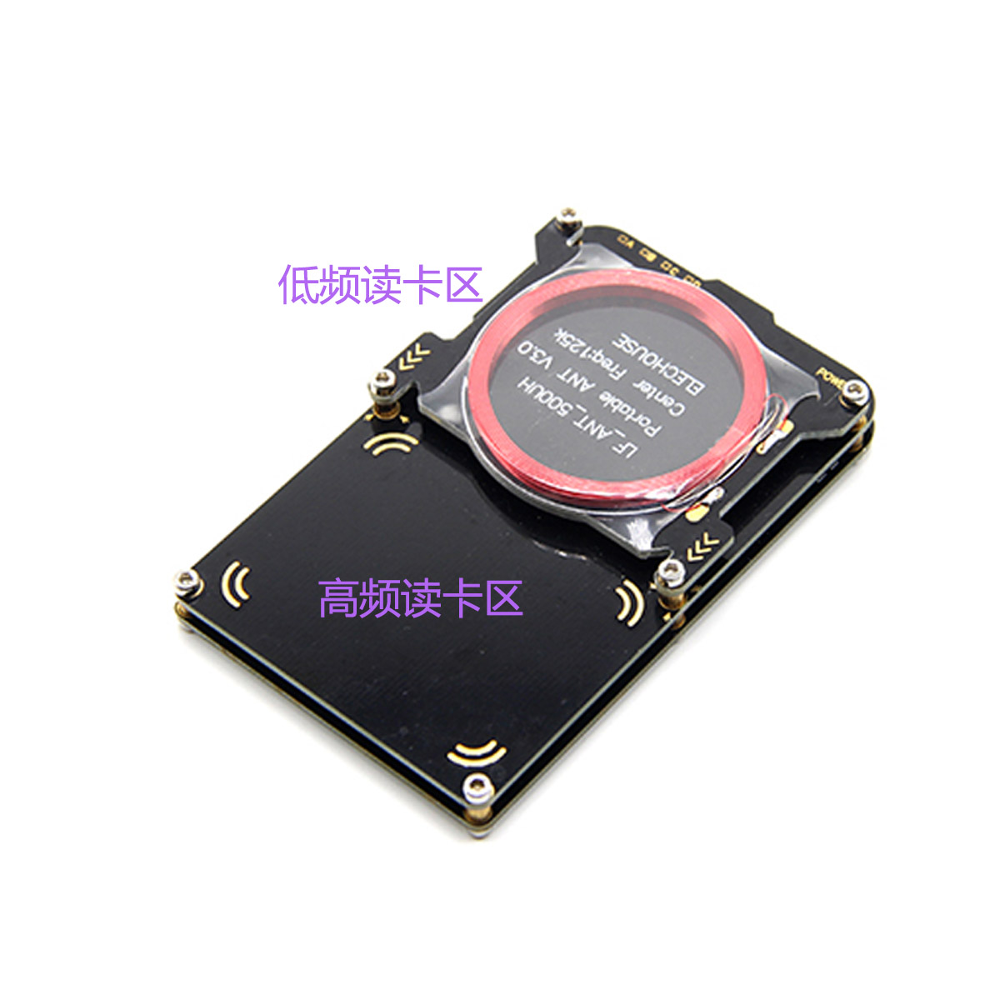
高频卡推荐放设备后面：
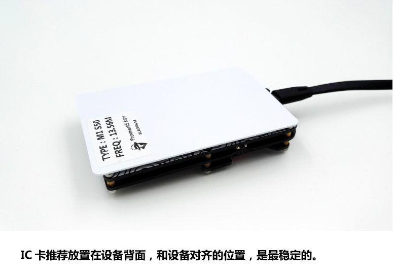
软件
Firmware + Client + Drive 下载
访问下面的论坛，大神已经把东西准备好了，而且2020年还在更新，点赞！
Official 和 Iceman 都行(32和64我估计也是没有区别的)。挑自己喜欢的吧
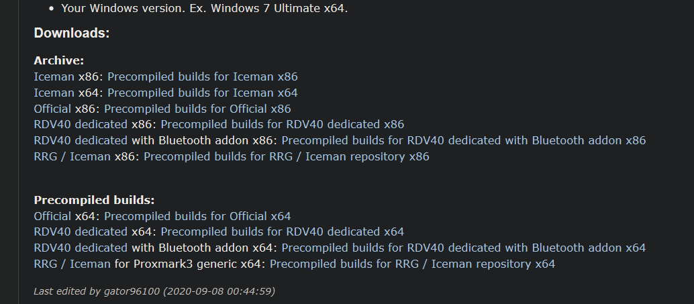
东西是放在Google Drive的，准备好梯子。下载20几兆那个就行，挑日期最近的
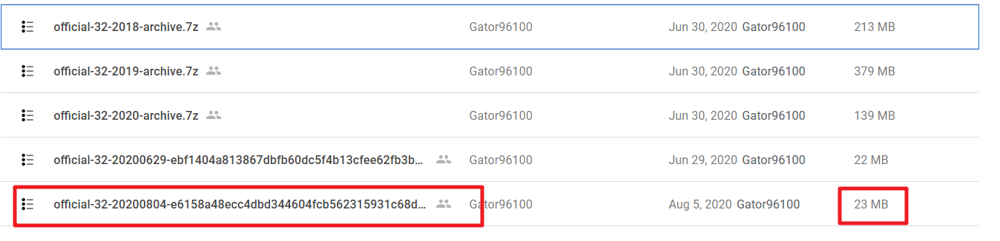
下载后，驱动，固件，软件都在压缩包了。
先更新驱动，一般Windows Update 能搞定，搞不定，自己在设备管理器里指定inf文件的位置即可。
然后，升级固件
Windows 驱动安装
对于Windows10，无需自己手动安装驱动，Windows Update 会自动帮你搞定
For windows 8 and above you are done, the auto installed Microsoft driver should be fine
Windows 其他版本，请参考官方说明(还在用Win7，是多大的情怀啊)
驱动安装好后，在设备管理器可以看到COM5(一般是这个)这个设备已经准备就绪
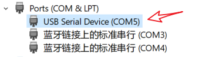
更新PM3固件
After downloading and extracting a precompiled build you need to flash your Proxmark3 with the correct firmware. This is done by first adjusting the com port inside “FLASH - All.bat” and then running it.
直接双击解压后的FLASH - All.bat文件。注意，不要中断PM3的连接，刷过机的都知道，有几率变砖的。。。。。。 看到提示“成功”字样的英文，那就是可以了
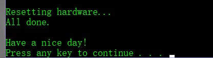
查看固件版本，固件版本是根据固件的日期来看的
hw version测试PM3是否连接正常
请注意，如果你的设备管理器中PM3的COM口不是5，请在Go.bat文件中修改该端口，修改哪边都行，确保bat文件的COM口和设备管理器里的COM编号是一样的
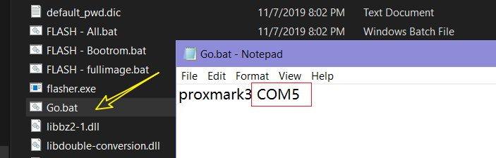
直接双击Go.bat打开命令行终端。我这里是Iceman的固件，成功连接是有一大段提示的。如果有failed字样，再检查是不是哪里搞错了。
放一张高频或低频卡在对应的读写区，然后hf search 或 lf search,测试连接的正确性
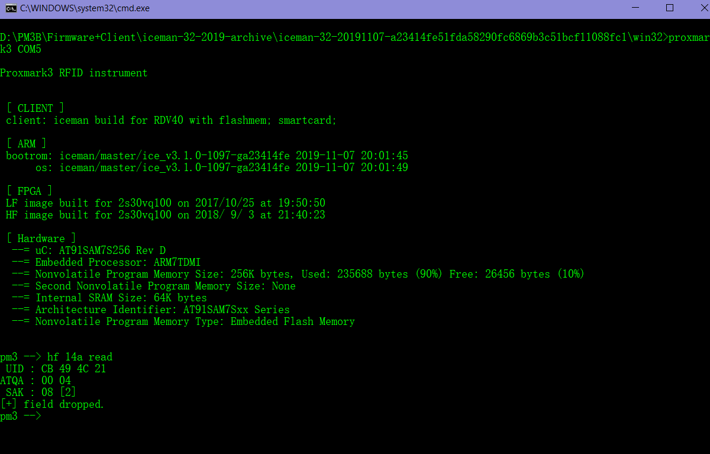
或者，测试高低频的电压(测试天线的谐振电压时，天线周围不能放置卡片或者金属，否则测量结果会偏低)
天线的电压丝毫不影响任何操作和功能，实际上高频超过 5V，低频超过 10V 就可以正常使用。只是电压越高读卡距离越远。
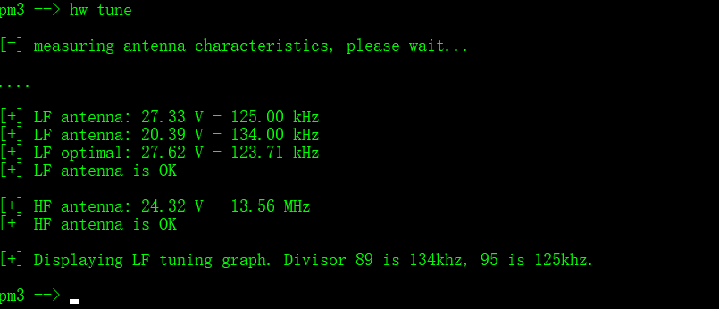
破解
低频卡
思路：低频卡一般是没有密码。直接拷贝复制就行
方法 1
读取低频卡 ID
lf em4x em410xwatchOR
lf em em410xwatch
专用读ID卡，灵敏度高，适合读不出ID的卡片。注意，这个指令会一直搜索卡片直到读出ID为止，如果没有放卡或者不是ID卡，会无法停止，需要重新插拔PM3
先执行命令后放卡。记录 ID 的同时需要注意记录 clock rate 的值，一般都是 64。
小知识：em4x 是大部分固定 ID 低频卡的芯片型号，一般卡片上印有一串数字的就是固定 ID 卡，出厂固化独一无二的 ID 号码，不可修改。写
写 ID卡 是单向的，无法得知是否成功
lf em4x em410xwrite 12345bcdef 1 64OR
lf em em410xwrite 12345bcdef 1 64
把 ID 号写入 T5577 卡中，长度是 10 位 hex ，示例中 12345bcdef 是 ID，后面“1”是 T55X7 的卡片类型，64 是 clock rate
方法 2
查看ID
lf search，记下EM TAG ID
这个可以找到固定ID的卡片类型，主要是 ID，HID，Indala这三种，如果是加密的5577还有加密的4305卡是读不到的。复制
lf hid clone 0000001450
5577 卡
lf t55xx detect 检测卡片lf t66xx dump 读取卡片数据
注意，如果是加密 5577 是无法检测配置，或者读出的块全部都是一样的数据。
取消5577卡的加密lf t55xx wr 0 001480040 00000000
0：代表写0块，0块是控制是否加密的控制块
001480040： 这个是写入0块的信息，这个代码是不加密的意思
00000000： 这个是卡片第7块的密码
写卡是单向的，无法看出是否成功
高频卡
思路：一般要先知道16个扇区中的一个密码(一般是0扇区的密钥)，然后用漏洞获取全部扇区的密码和数据
求一密
用PM3内置的默认密码尝试破解
hf mf chk *1 ? t不是默认密码可以尝试PRNG漏洞获取0扇区密钥，过程可能有点久。不一定能成功
hf mf mifare
某些卡运行这个命令，运行结果每条都是Mifare: Can't select card这种提示，相当恶心，很大几率失败。偶尔过程中会提示英文“Can’tselect card” 这是 BUG 提示，请忽视。如果运行中 ABCD 在不断闪烁，表示可以破解，等待结果即可。对于不支持的卡片，无论如何调整卡片位置，LED 都不会有变化，最终 PM3 会出现复位掉线。上面两种方法都不行，那就用嗅探方法试试。
需要去现场，把天线置于卡片和读卡机之间嗅探通讯数据，解出一个扇区密匙。
嗅探获得密码不能指定，是读卡机访问了卡片的哪个扇区，才可以获得那个扇区的密码。在无法获得其他密码的时候，只需复制这几个扇区的数据即可使用，不需要复制整张卡片的数据。M1 卡在读卡机和卡片交互数据和密码时，使用了 crapto1 算法。即便同一张卡，同样的密码，嗅探得到交互数据也是随机的，但是只要获得后面提到的四组随机数组，以及 UID，就可以反解出密匙。
hf mf sniff点击开始嗅探之后，PM3 高频读卡区夹在卡片和读卡机之间，然后刷卡。三者之间都不能贴的太近，两边不能有金属遮挡。
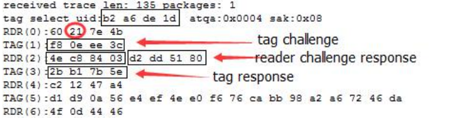如上图，刷一次卡后，拿开等待几秒，电脑会返回嗅探到的数据。
注意寻找 60 或者 61 开头的数据，60 含义是使用 A 密码访问，61 是使用 B 密码。
开头是 RDR 的是读卡机发出的指令，TAG 则是卡片发出的指令。
红圈中表示读卡机访问了第 21 个块。21 是十六进制，转换成十进制是 33 块
第一个方框“b2a6de1d”是卡片 UID
第二个方框“f80eee3c”是 tag challenge(卡片挑战数)
第三个方框“4ec88403”是 reader challenge(读卡器挑战数)
第四个方框“d2dd5180”是 reader respones(读卡器响应数)
第五个方框“2bb17b5e”是 tag respones(卡片回应数)然后，用这个软件，计算出密码
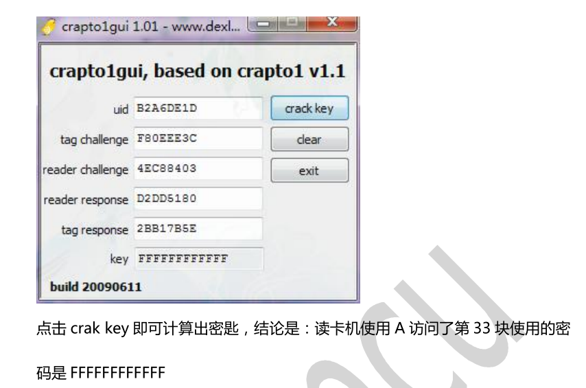
去现场嗅探，是迫不得已的情况下使用的。带着笔记本，连接PM3，然后在读卡机地点不停的尝试，保安不注意你都难。。。。
PM3 有个离线嗅探的功能，能让PM3暂时断开笔记本的连接，然后进行嗅探hf 14a snoop hf list 14a http://pm3.echo.cool/index.php/2018/08/21/pm3%E7%A6%BB%E7%BA%BF%E5%97%85%E6%8E%A2%E8%AF%B4%E6%98%8E/（待续）
还有一种方法
需要去现场 ，把天线模拟成 M1 卡，诱发读卡机读卡，并且捕捉读卡机发出的验证密匙，不能离线操作，监听完按按钮退出。
hf mf eclr清除缓存 在无卡监听读卡器之前，务必要清除缓存。
hf mf sim x1.读卡器使用固定密码读取某一扇区 直接使用"hf mf sim i x"即可使PM3进入嗅探模式。当PM3采集了足够的数据之后即可自动计算出密码 2.读卡器通过UID实现一卡一密 使用"hf mf sim u xxxxxxxx i x"(xxxxxxxx此次使用的UID)来获得某一UID下的读卡密码。这样就可以进行选择明文攻击，对于破解一些简单的一卡一密算法还是很有帮助的 https://www.cnblogs.com/wh201906/p/12838573.html（待续）
验证检测出的密码正确性。现场嗅探之后，切记一定要用下面的命令检查密码的正确性。 别问为什么检查，问就是被坑过
hf mf chk 0 A ffffffffffff ， “ffffffffffff” 是检测出的密码
如果提示 No valid keys found.，有可能是破解出的密码错误，或者是 存储控制 不是默认的 ff078069。
知一密求全密
hf mf nested 1 0 A ffffffffffff //使用 nested 时注意要选择正确的卡片容量。1代表1K卡，可选1-4K；0是0扇区，A密钥，然后加上上一步破解出的密码
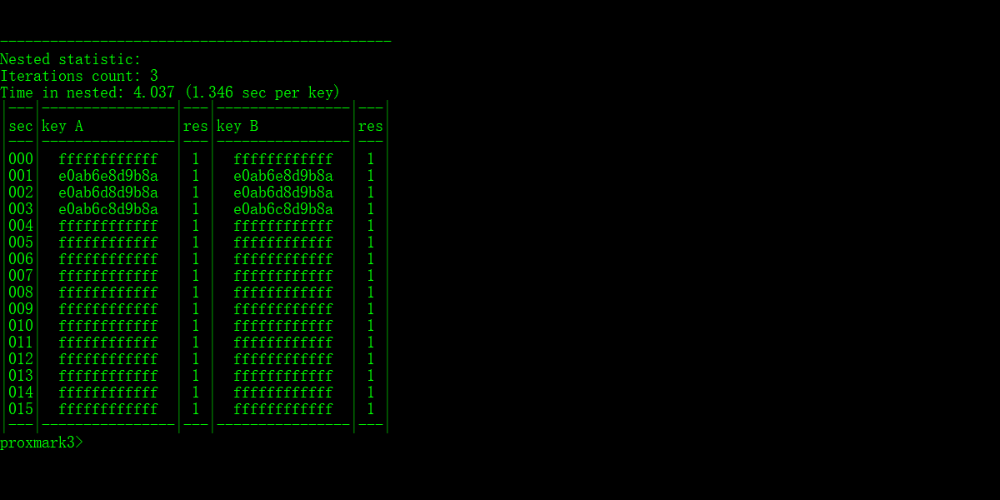
看到这个结果，你就基本成功可以偷笑了
RES 结果如果为1，代表密码正确； 如果是0，代表密码无效
一般B密码不正确不影响数据的读取，A密码不正确，则会影响。A密码不正确，可以再 nested 一遍
有极少的卡片不支持一密求多密的操作，需要依靠嗅探的步骤。
导出密码
导出后会在根目录生成一个dumpkeys.bin的文件，里面存放了16个扇区的密钥（16进制）hf mf nested 1 0 A ffffffffffff d
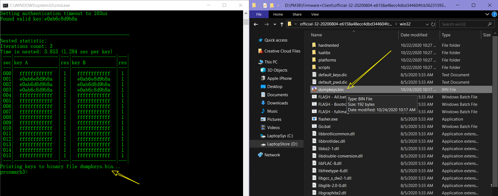
导出数据
上面只是导出密码而已，还有数据我们也要导出hf mf dump
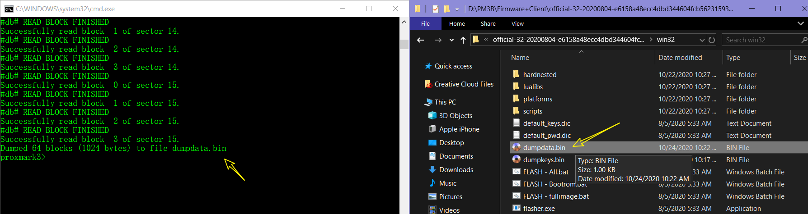
转换成eml格式
生成的 bin 文件可以中支持十六进制的软件打开。
附一个二进制查看器下载
而Proxmark3不能识别、使用bin文件，需要转换成eml格式。 eml格式的文件可以Notepad直接打开查看script run dumptoemul.lua
命令运行后，会直接在根目录下生成一个 eml 文件
复制原卡数据到新的UID卡上
hf mf cload 84EAC416 ，84EAC416 是上面步骤生成的eml文件名称，不加后缀
兼容性好的UID卡，写入成功会返回消息
兼容性不好的，写入会有错误提示，但是不影响使用
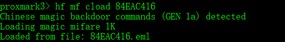
写卡是没有回显的，只能通过读取的方式查看有没有读取成功，我是通过hf search 查看两张卡的UID，如果一致，那就是成功了。或者直接读取扇区的数据，查看是否一致。
修改IC卡数据
先占个坑位，后续有时间补上
其他
官方旧版GUI软件说明
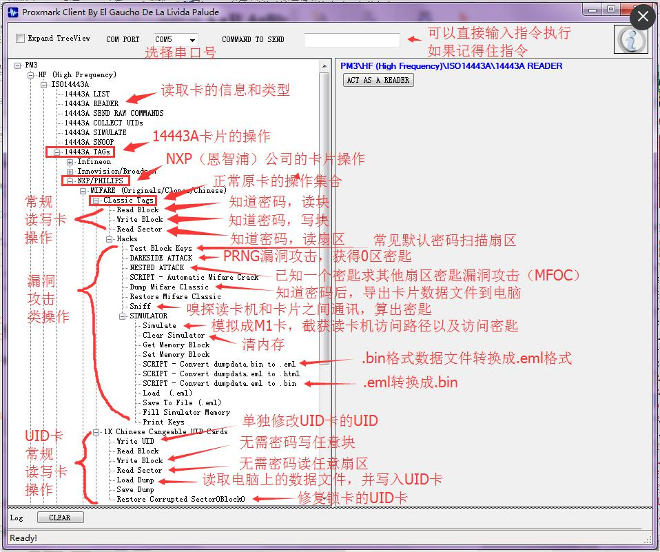固件版本
固件从老到新排列：r486→756→816→848→852→1.0.0→2.0.0→2.5.0
2.5 大概是15年的了
现在2020已经到3.1了修改 UID 卡的 UID
hf mf csetuid 1234bcdf
修改 UID 卡的 UID 为 1234bcdf，UID 是四个字节。复制5577卡后加密锁卡
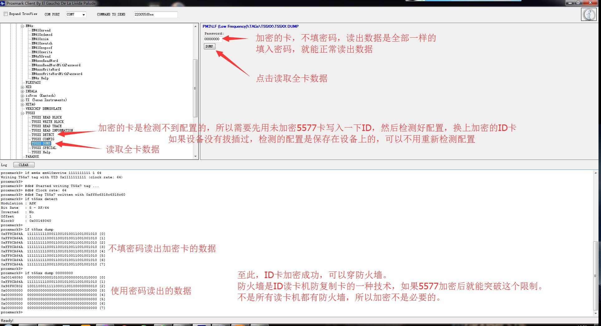
能看到最后，就放一个我的Clients，里面有几个GUI客户端。Windows Security 扫描过了，放心用。
下载
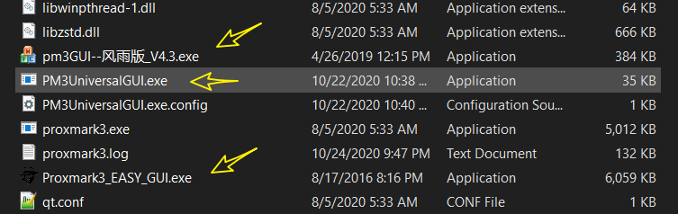一些命令
hf mf （MIFARE卡的相关命令...）
help显示帮助
dbg设置默认调试模式
rdbl读取MIFARE classic卡的区块数据
rdsc读取MIFARE classic卡的扇区数据
dump导出MIFARE classic卡的数据到二进制文件
restore从二进制文件恢复数据到空白的MIFARE classic卡
wrbl改写MIFARE classic卡的区块数据
chk测试MIFARE classic卡的各个区块KEY A/B
mifare基于PRNG漏洞，执行mifare “DarkSide”攻击操作
nested测试嵌套认证漏洞，基于一个已知Key，获取都有扇区Keys
sniff嗅卡片与读写器之间的通讯(等同于hf 14a snoop)
sim模拟一个MIFARE卡片
eclr清除仿真内存的各区块数据
eget获取仿真内存的各区块数据
eset设置仿真内存的各区块数据
eload从导出的文件加载仿真数据
esave导出保存仿真数据到文件
ecfill利用仿真器的keys来填补仿真内存
ekeyprn打印输出仿真内存中的keys
csetuid直接设置可改UID卡的UID
csetblk把对应区块数据写入UID卡
cgetblk读取UID卡对应区块数据
cgetsc读取UID卡对应扇区数据
cload写入dump数据到UID卡。注意
csave保存UID卡数据到文件或者仿真内存进阶
PM3 类型
下面两篇文章写得很好，大家可以参考一下：
快照备份：点我下载
快照备份：点我下载
目前国内最常见的 Easy 的版本，但是大佬都在用最新的 rdv4，导致我后面编译和破解挖了不少坑，都是穷惹得祸。。。
编译
最近要破解一张电梯 IC 卡，但是入门里面的方法不奏效，想去实地嗅探又没办法，于是有了这个 【进阶】的部分。（虽然最后还是没有搞出密码）
这里我们尝试在 Kali 里编译冰人的 RRG 固件。Kali 是运行在虚拟机的。
下面是 repo 的地址，里面的说明文档把基本的都提到了。
编译可以直接按照说明文档来。
其实已经有开发者提供预先编译好的固件，但是我的设备是 Easy 版本，flash 只有 256k，预编译的不适合，刷不进去，然后一直是 Offline 状态。
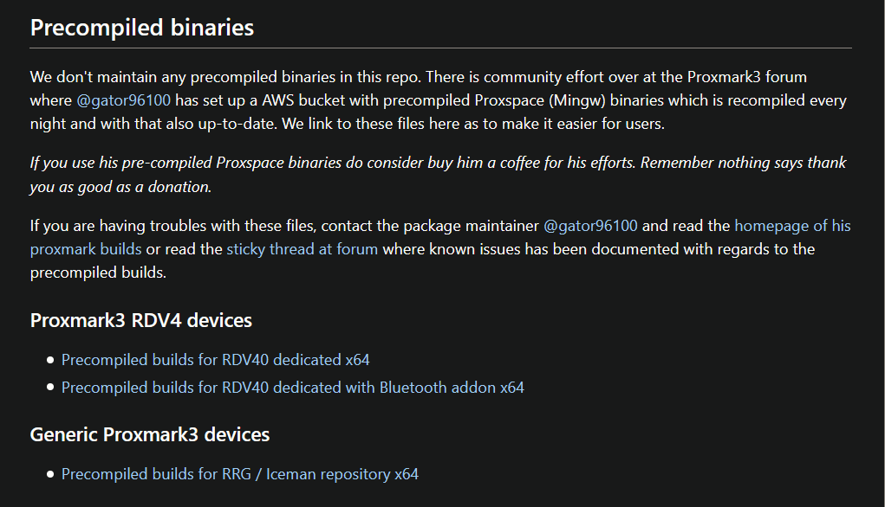
重要：如果你也是 256k 闪存的 PM3，在编译前要修改一下配置文件。 如下：
在 Makefile.platform 文件中， 添加如下内容
PLATFORM=PM3GENERIC
PLATFORM_SIZE=256
STANDALONE=
SKIP_HITAG=1
SKIP_FELICA=1然后，编译的命令不是简单的 make 或者 make all, 请使用 make PLATFORM=PM3GENERIC.
编译完成之后，就可以使用 flash 等命令刷入固件
无法连接情况的解决方法
有时候由于刷入错误的固件等原因，导致 PM3 连接电脑没有反应，识别不出。这时不要慌。
先把 USB 连接线断开，然后按住 PM3 上面的按钮，然后再接入 usb 线，按住按钮直到电脑识别出来。
https://forum.dangerousthings.com/t/proxmark3-easy-flash-issues/7889/9
使用方法
这里有所有命令的使用方法，这些命令跟官方的使用有些不同，遇到不确定的用法，后面加个 -h 参数来查看用法，很详细的。
https://github.com/RfidResearchGroup/proxmark3/blob/master/doc/commands.md
但是我现在还没有找到官方固件中常用的 mifare、 snoop 等命令。后面再继续研究吧。
一种没有漏洞 IC 卡破解思路
这张 IC 卡 只有 1，2 两个扇区加密，其他都是默认密码，用 nested 破解不出。于是试着从 windows 转战 Linux 平台。Windows 用官方的固件，到 Linux 用了 RRG 的固件。但是 Kali 里面也是一样破解不出，后来在 RRG 的 issues 里看到这个：
作者是这样形容这种卡的
There has been in the wild some clones, like Fudan and some uid changeable card which doesn’t have the NACK bug and they use somewhat odd a fixed nonce. Rendering all current Mifare classic attacks useless.
如果你有幸遇到这种卡，用 hf 14a info 命令看是这样的：
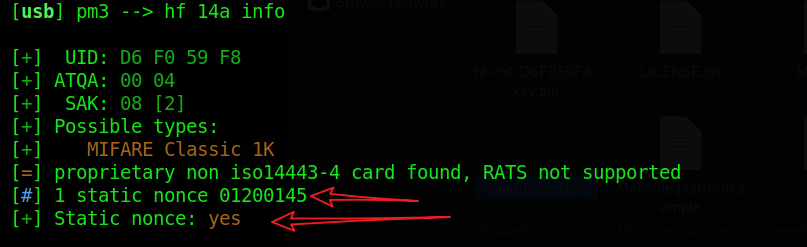
作者为这种卡开发了一个新的命令来破解：hf mf staticnested。但在我的机器上也是破解不出，运气太不好了。
搞大事情
后面计划用树莓派安装 Kali，然后接上 PM3 来搞现场嗅探，就不用带笔记本这个笨大件了。
一个充电宝，一个派，一个PM3，然后 SSH 连接派来操作，想法可以。再挖个坑，后续更新